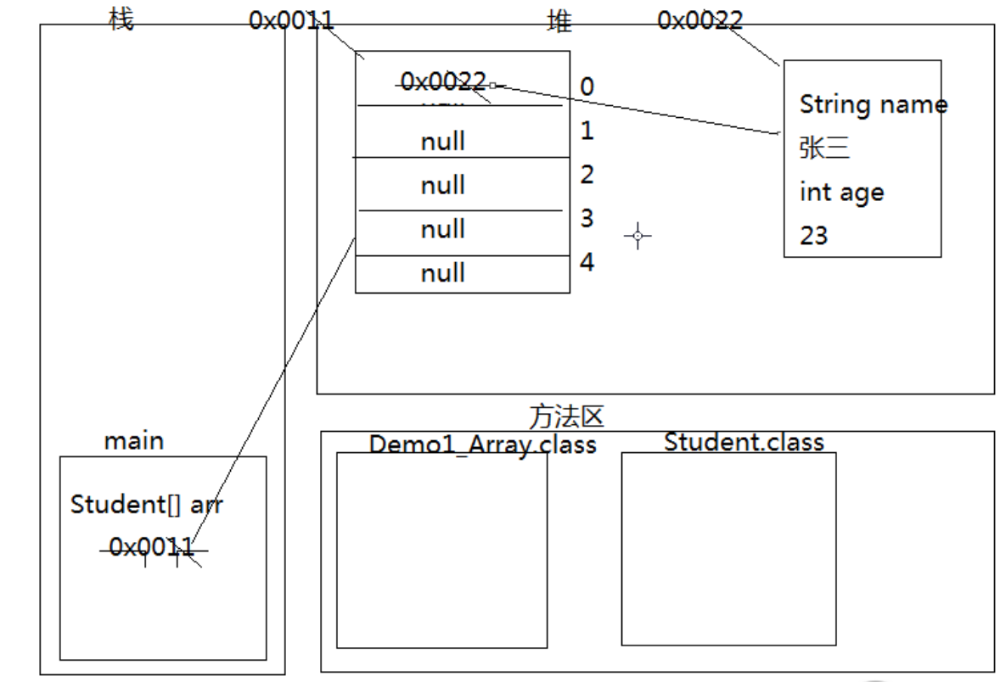
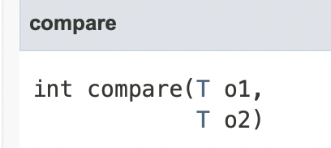

前言
本篇文章主要总结了Collection、List、Set和泛型、Map的相关知识
集合
引用类型数组举例
Student[] arr = new Student[5]；
其中，数组的引用存在栈，数组对象存在堆中，数组对象里的arr[0]、arr[1]等存的是Student对象的地址值

注：引用类型不一定存在栈还是堆，在方法内创建的就在栈，在类中方法外创建的就在堆（在类中创建的就是成员变量，属于对象）
集合由来
数组长度是固定的，集合类可以存储任意对象，长度可以改变（类似链表）
集合存的不是对象是对象的引用
数组和集合区别
Collection接口
方法
- boolean add(object o )方法
1
2Collection c = new ArrayList();//父类引用指向子类对象
boolean b1 = c.add(“123”); //放进去以后元素会提升为object
在Arraylist里面可以添加重复的对象，所以一直是true
Set里面可能有false
- boolean remove(object o )方法
删除指定元素
底层和contains一样依赖equals方法 - void clear()
清空集合 - boolean contains(object o )
判断是否包含元素
注意，底层用的是传进来的对象的类的equals方法来比较，所以要找的对象的类里必须重写equals方法，比较的才是对象值而不是地址值 - boolean isEmpty()
判读是否为空 - int size()
返回长度集合遍历
Objct [] toArray()方法把集合转换为数组Object[] arr = c.toArray();
但是add时会把原本元素向上转型为Objet类，所以要使用原本对象的方法的时候要向下转型再使用。1
2
3
4
5
6
7
8
9Collection c = new Arraylist();
c.add(new Student (李，23))；
c.add(new Student (李，22))；
c.add(new Student (李，21))；
Object [] arr = c.toArray();
for (int i = 0 ;i< arr.length;i++){
Student s = (Student)arr[i];
system.out.println(s.getName() +s.getAge());
}
普通方法加All(参数是集合不是普通对象）
- boolean addAll(Collection c)
把集合c里面的每个元素添加进去，
如果用add添加一个Collection对象,那就是把整个集合当成一个元素添加进去 - boolean removeAll(Collection c)
删除的是交集 - boolean containsAll(Collection c)
- boolean retainAll(Collection c)
取交集
当两个没有交集的时候，返回的也是true,只要调用的集合改变就是true
没有改变就是false迭代器
- Collection里有iterator()方法，返回类型是接口Iterator
- 接口Iterator里的方法（三个）
- boolean hasNext()
- E next() 返回迭代中的下一个元素
void remove()删除迭代器返回的最后一个元素
遍历
1
2
3
4Iterator it = c.iterator();
while(it.hasNext()) {
System.out.println(it.next());
}
需要对每个元素操作的话，还是需要向下转型
迭代器原理
每一个集合内部存储结构是不一样的，存取操作也是不一样的，所以向上抽取成接口，然后在每个类里定义自己的迭代方式
这样整个集合体系遍历都可以用hasNext()和next（）方法，并且使用者不用管内部实现。
List接口
常用方法
- void add (int index,E element)
在指定位置插入元素,0=<index<=size - E remove(int index)
删除索引位置的元素并返回被删除元素
删除的时候不会自动装箱，如果集合里有Integer对象1，remove(1)删除的只是索引1位置的元素而不是这个对象 - E get(int index)
获取索引的元素，可以用来遍历，这个是list特有的 - E set(int index,E element)
修改指定元素并发异常
当List集合用Iterator遍历的时候，添加元素，就会发生并发异常，这个时候可以用List特有的迭代器ListIterator来迭代1
2
3
4ListIterator it = list.listIterator();
while(it.hasNext()){
it.add(“添加”)；//用ListIterator独有的add方法来添加
}
ListIterator特有方法
hasPrevious() 是否有前一个元素
previous() 获取元素并把指针向前移动
和hasNext()和next()相对，但是必须先正着遍历，然后才能反着遍历，因为指针刚开始为0
List三个子类特点以及LinkedList
ArrayList 查询快，增删慢，线程不安全
Vector 查询快，增删慢，线程安全，效率低
LinkedList 查询慢，增删快，线程不安全
LinkedList
- 方法
- public void addFirst(E e)/addLast(E e)
在链表头部和尾部添加元素 - public E getFirst()/getLast()
- public E removeFirst()/removeLast()
- public E get(int index)
- 用LinkedList来模拟栈
1
2
3
4
5
6
7
8
9
10
11
12
13
14
15public class Stack {
private LinkedList list = new LinkedList();
//模拟进栈
public void in (object obj){
list.addLast(obj);
}
//模拟出栈
public object out(j){
return list.removeLast();
}
//模拟是否为空
Public boolean isEmpty(){
return list.isEmpty();
}
}
泛型
泛型概述
- Collection
中的 即为泛型，E是一个引用数据类型， - 用来限定Collection里只能放E类型的对象或者E类型的子类对象
注意：在ArrayLIstlist = new ArrayList ();
是错的，但是可以在后面添加Student对象m
泛型好处
- 提高安全性（把运行期的错误转换到编译期）
当没有泛型的时候，遍历的时候要用到子类特有的方法的时候要强转，就会出错 - 不用强转类型
泛型由来
- 没有泛型的时候，通过Object类型来接收任意的对象类型，但是实际使用中，会有类型转换的问题，所以用泛型来解决这个安全问题
比如把Student对象向上转型为Object类，再向下转型为Worker对象，编译是可以通过的，但是运行就肯定是错误的。
自定义类泛型
- Collection类可以有泛型，自定义类也可以有泛型
- 一般要求是一个大写字母
- 当用这个自定义类创建对象的时候，给泛型赋值（引用数据类型）
泛型方法
1
2
3public<T> void show(T t) {
System.out.println(t);
}
方法的泛型最好与类的泛型一致
如果不一致，要在方法上声明该泛型
有两种泛型接口的方式
在实现接口的类定义的时候给泛型赋值(推荐)
1
2
3
4class Demo implements Inter<String >{
public void show (String s ){
}
}不再类定义的时候赋值，创建对象的时候再去赋值
1
2
3
4class Demo<T> implements Inter<T>{
public void show(T t) {
}
}
泛型通配符<?>
- 泛型通配符表示任意类型
List<?> list = new ArrayList<>(); - 当右边不确定时，左边可以指定为？
- <?extends E> 泛型固定上边界，代表E及其子类（不可添加，可读）
ArrayList<? extends Person> list = new ArrayList<Student>();
所以上行代码是可以编译通过的。
- add
不能添加元素，因为：
<? extends Person>只是告诉编译器集合中元素的类型上限，但是编译器并不知道具体是哪种类型的，list可以指向ArrayList(),也可以指向ArrayList ()，也可以指向ArrayList ()也就是list指向的集合类型是不确定的，所以为了类型安全，编译器只能阻止添加元素
例如，假如list指向Student集合，现在往里添加Worker对象，肯定会出错。 - get
可以获取元素，但是必须使用 E 来接受元素！
- <？super E >泛型固定下边界，代表E及其父类
ArrayList<? super Student> list = new ArrayList<Person>();
是可以通过编译的
- add
可以写入，因为尽管编译器不知道list指向的是Student还是Student的父类，但是往集合里存入Student类或者Student的子类对象，都是可以和list指向的类兼容的 - get
可以获取，但是因为list可能指向E的任何父类，所以接受一定要用Object来接收。
TreeSet(Comparator<?super E> comparator) 比较器
TreeMap(Comparator<?super E> comparator)
不管比较器是E还是E的父类类型，都可以添加两个E或者E的子类进去比较。
- PECS法则
生产者（Producer）使用extends，生产者提供数据。频繁往外读取内容的，适合用上界Extends。
消费者（Consumer）使用super，消费者消费数据。经常往里插入的，适合用下界Super。 为什么要引入泛型通配符？一句话：为了保证类型安全。
泛型是使用擦除来实现的
·当你深入研究泛型时，你会发现有大量的东西初看起来是没有意义的。例如，尽管可以声明为ArrayList.class，但是不能声明为ArrayList
.class 因为声明为ArrayList
.class 中的 是没有任何意义的。在编译器后 是没有的，是被擦除的。 ·java泛型是使用擦除来实现的，这意味着当你在使用泛型的时，任何具体的 类型信息 都被擦除了，你唯一知道的就是你在使用一个对象。
因此List
和List 在运行时 事实上是相同的类型的。这两种形式都被擦除成它们的”原生”的类型 - 泛型是为了编译前去除错误，但是运行的时候，泛型就被擦除了
迭代删除
1. 增强for
- 底层是迭代器实现的，格式:
for (元素数据类型 变量名：数组或者Collection集合){} 数组遍历
1
2
3
4int[] arr= {1,2,3,4};
for(int i:arr){
System.out.println(i);
}集合遍历
1
2
3
4
5
6ArrayLIst<String> list = new ArrayLIst<>();
list.add(“sdf”);
for (String str: list){
System.out.println(str):
}
2.迭代删除集合元素的三种方法
- 普通for循环（要i–）
1
2
3
4for (int i = 0; i < list.size();i++){
if (list.get(i).equals(目标元素))
list.remove(i--);
}
需要–是因为，remove删除元素后，后面的元素会整体上移一个位置。再i++就会多走一个位置。
所以在不符合删除条件的时候，索引继续往下走，符合的时候，删除以后要i减减 一下，这样在i++就会在原地，继续往下检查
- 迭代器删除
1 |
|
注意迭代器里面只能用迭代器自己的3个方法，否则会导致并发异常。
增强for循环不能删除，只能遍历
因为增强for循环底层用的是迭代器，删除会导致并发异常
静态导入
1.概述
导入类中的静态方法，在导入包的时候，加上static和静态方法名
import static java.util.Arrays.sort;
这样就可以省略静态方法的前缀
sort()而不是Array.sort()
注意
方法必须是静态的，如果有多个同名的静态方法，不知道使用是谁，所以意义不大，可以看懂即可。
可变参数
定义方法的时候不知道定义多少个参数
- 可变参数其实是一个数组
- 格式
数组类型… 变量名
int…arr1
2
3
4
5
6
7
8
9
10
11
12
13
14public class Varable {
public static void main(String[] args) {
System.out.println(add(2, 3));
System.out.println(add(2, 3, 5));
}
public static int add(int x, int… args) {
int sum = x;
for (int i = 0; i < args.length; i++) {
sum += args[i];
}
return sum;
}
}
用数组的话不能直接add(1，2，3),因为需要传进去数组的地址值。
- 如果有多个参数，可变参数要在最后一个
Arrays工具类
数组转集合asList (arr）
- 数组可以转集合但还是不能增删
- 好处是可以用集合的操作
- list只能存引用数据类型，所以当基本数据类型的数组转成集合的时候，是把整个数组看做一个对象放进集合。
- 想把基本数据类型转换成集合，可以用Integer类似的引用数据类型（包装类）来创建数组
集合转数组
T[] toArray(T[] a) - 当集合转数组时，数组长度如果是小于等于集合的size，转换后数组长度等于集合长度，如果数组长度大于size，数组长度就是指定的长度
45.Set集合
1. Set方法
Set方法和Collection一模一样，要学习的是如何让元素唯一
- 无索引
- 不可以重复
- 无序（存取不一致）
- 可以用增强for遍历，因为增强for底层是迭代器，迭代器支持整个collection
2.子类HashSet
特点
- 不保证set迭代顺序，不保证顺序一直不变
- 允许null元素
- HashSet的继承体系中有重写toString方法
- 原理
HashSet调用add()存储对象的时候，先调用对象的hashCode（）得到哈希值，在集合中找是否有哈希值相同的对象
如果有，则调用equals方法比较，false就存，true就不存
如果没有，直接存入集合保证元素唯一
要重写存储对象的equsle方法，和hashCode方法，才能保证元素唯一
- 如果不重写hashCode方法，则相同的元素进来，通过hashCode方法，有不同的地址值，就没必要比较，就都存储进来了
- 重写hashCode给一个固定值的时候，相同的值则会比较，如果调用equals发现元素相同，那就不存，但是这样会调用很多次equals方法，效率低
- 重写hashCode要让不同的对象返回的值尽量是不一样的，ide可以自动生成hashCode方法和equals方法
自动生成的hashCode方法和equals方法
equals(Object obj) - 先判断地址值是否相等，判断是不是一个对象
- 判断是不是Null
- 判断两个对象的getClass是不是一样，返回false
- 只有上一步是true的时候，就可以去强转，来判断对象的元素是否相等
hashCode()
prime=31
质数，不大不小，2^5-1好计算
3.LinkedHashSet
- TreeSet集合是用来对元素进行排序的，并且保证元素唯一
- TreeSet直接存自定义类，是不能输出的，因为无法比较大小，不能排序
要把自定义类（如Person）实现comparable接口并且重写int compareTo(T o)方法compareTo(T o)方法
- 当compareTo里面返回0的时候，只有一个元素
- 当compareTo里面返回正数的时候，怎么存就怎么取
- 当compareTo里面返回负数的时候，会倒序存储
TreeSet原理
- 二叉树
- 小的存左边（负数），大的存右边（正数），等于不存（0）
- TreeSet如何存储元素取决于compareTo的返回值
- 举例：Person对象如果比较重写compareTo方法用年龄来排序，同年龄不同的对象就不会存进去（因为返回值为0）
所以用以下的方法1
2
3
4public int compareTo(Person o){
int num = this.age - o.age;
return num ==0? this.name.compareto(o.name) : num;
}
比较器
TreeSet有一个构造方法，可以根据比较器进行排序
TreeSet(Comparator<?super E> comparator)
因为是接口，所以可以传入子类对象
- Comparator是一个接口，所以去写一个类实现这个比较器

抽象方法只有compare和equals，因为Object类里有equals,所以实现的时候只用重写compare方法即可。1
2
3
4
5
6
7//字符串按长度排序，长度相等时按内容排序
class CompareByLen implements Comparator<String>{
public int compare(String s1,String s2) {
int num = s1.length() - s2.length();
return num == 0 ? s1.compareTo(s2) :num;
)
)
现在可以用
TreeSet
总结
- TreeSet是用来排序的，可以按照指定的顺序排列（）
- 有两种方法来比较自定义类
- 自然方式
把自定义类加上实现comparable接口并重写compareTo()方法
TreeSet调用add()方法的时候会根据compareTo()返回的结果进行存储 - 比较器
传入Comparator的子类对象，TreeSet就会根据比较器中的顺序排序
add()方法内部会调用Comparator接口中compare()方法排序 - 如果有比较器，会用比较器排序
用匿名内部类实现比较器
- 因为比较器是一个接口，需要写一个子类去
- 实现它，并且在括号里传进去一个子类对象，这个刚好和匿名内部类符合
- 匿名内部类定义
- new 接口( ){
实现接口；//大括号里相当于接口的一个子类
}
接口Map（K,V）
概述
- 将键映射导值的对象
- 一个映射不能包含重复的键，每个键最多只能映射到一个值
Map和Collection的不同
- Map是双列的，Collection是单列的
- Map键是唯一的，Collection的子体系Set是唯一的
- HashSet底层用的是map，只不过隐藏了V的一列
map方法
- V put(K key,V value)
因为相同的键不存储，值覆盖
所以返回的是被覆盖的值，如果是第一次给键对应值，那返回就是Null - void clear() 清空
- V remove（Object key）根据键删除值
- boolean containsKey(Object key)
- boolean containsValue(Object value)
- boolean isEmpty()
- entrySet() 返回一个 集合Set<Map.Entry<K,V>>
- Map.Entry<K,V>是Map的内部接口，把键和值封装成一个对象，把双列变成单列，存储在Set集合中
- 里面有getKey()和getValue() （谁实现的？）
- V get(Object key) 根据K获取V
- Set
KeySet() 把所有键放在一个Set集合里 - Collection
values() 把map里的value值返回到一个集合里 - int size() :返回键的个数
遍历
- Map里面没有迭代器
- 遍历要用KeySet获取键的集合，在通过get找到键对应的值
1
2
3for(String key : map.KeySet()) {
System.out.println(key + “=“ + map.get(key));
}
第二种遍历方法entrySet()方法
- 把整个键值对看成一个对象，然后存在一个单列集合
- 遍历单列集合，获取键值对对象
- 根据键值对获取键和值
1
2
3
4
5
6
7
8
9
10
11
12//把键和值封装成了一个Entry对象，吧对象存在Set集合中
Set<Map.Entry<String,Integer>> entrySet = hashmap.entrySet();
//集合中每一个元素是一个Entry对象，<>里面的整体只是一个泛型
Iterator<Map.Entry<String,Integer>> it = entrySet.iterator();
while(it.hasNext()){
Map.Entry<String,Integer> en = it.next();
//多态，父类引用，指向子类对象
String key = en.getKey();
Integer value = en.getValue();
System.*out*.println(key + “=“ + value);
}
增强for遍历1
2
3for (Map.Entry<String,Integer> en :hashmap.entrySet())
System.out.println(en.getKey() + “=” + en.getValue());
}
- entrySet()原理
HashMap类有一个内部类Entry（不是子类）
实现了Map.Entry,Entry是Map.Entry的一个子类
里面重写了getKey和getValue方法
entrySet比KeySet效率更高
Entry源码和为什么用entrySet()自定义类作为键
自定义类作为键的时候，这个类要重写equals和hashCode两个方法才能保证键唯一，和HashSet一样，因为HashSet底层用的也是HashMapLinkedMap
存取一致TreeMap
根据键排序
要在键所属类里实现Comparable并重写comparableTo方法
或者写比较器，比较Key （new Comparator<键的泛型>(){实现compare方法}）Map应用
统计字符串出现次数
把字符串转换成字符数组，遍历字符数组然后存在Map里面
第一列存字符，第二列存出现的次数
存储的时候做判断，没出现过就当键，存过就值加1hm.put(c, !hm.contains(c)? 1:hm.get(c)+1)HashMap嵌套HashMap
Set集合里面是不能直接存放Map元素的
但是HashMap的K或者V是可以存Map元素，形成嵌套HashMap和Hashtable的区别
- 共同点
- 底层都是哈希算法
- 都是双列集合
- 不同点
- HashMap是线程不安全的，效率高，JDK1.2
Hashtable是线程安全的，效率低，JDK1.0 - HashMap可以存储Null键和Null值
Hashtableu不可以
Collections工具类
当一个类里面所有方法都是静态方法，就会私有构造方法，目的是不让创建对象，直接类名.调用
- Collections就是私有构造方法
Collections中常见方法
- public static
void sor(List list)
List是怎么存怎么取，这个方法可以让LIst有序，前提是，T这个类实现comparable接口并重写compareTo()方法 - public static
int binarySearch (List<?> List,T k)
二分查找，如果搜索键包含在列表中，返回索引，否则返回（-（应该插入的点）-1） - public static
T max(Collection<?> coll)
返回集合中最大值 - public static void reverse(List<?> list)
集合反转 - public static void shuffle(List<?> list)
随机打乱顺序（洗牌）